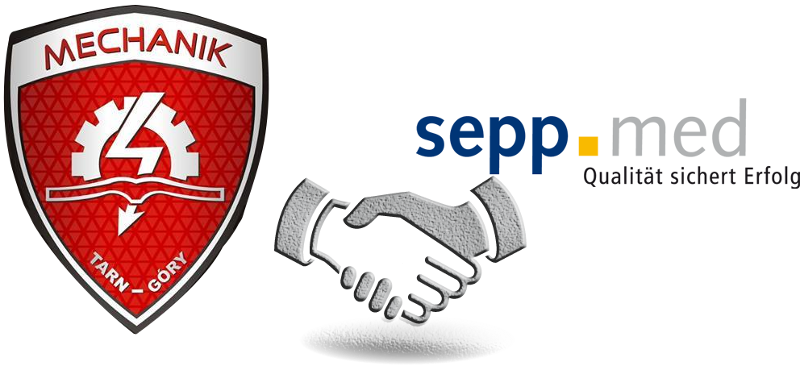

Unsere Zusammenarbeit begann im Jahr 2013. Die ersten Kontakte haben wir mit der Hilfe von Herrn Eberhard Irllinger, Landrat des Landkreises Erlangen-Höchstadt
geknüpft. Im Rahmen des Projektes Leonardo da Vinci konnten die Schüler unserer Schule schon zweimal ein 4-Wochiges Praktikum
in der Firma SeppMed abschliessen. Seit 2016 arbeitet die Firma mit unserer Schule im Rahmen des Projektes Erasmus+ zusammen. Die Ansprechpersonen
sind: in der firma SeppMed - Herr Wolfgang Barth und in unserer Schule - Frau Ilona Wdowiak.